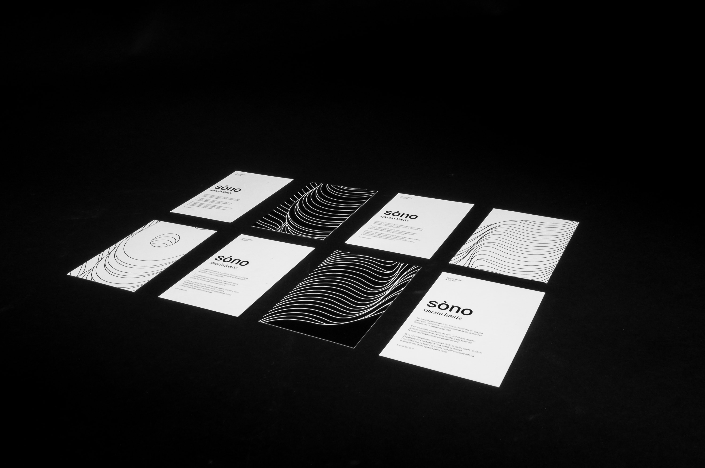
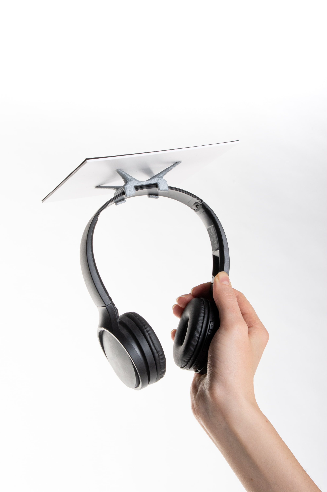
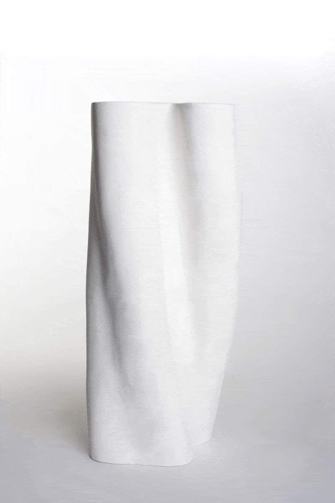
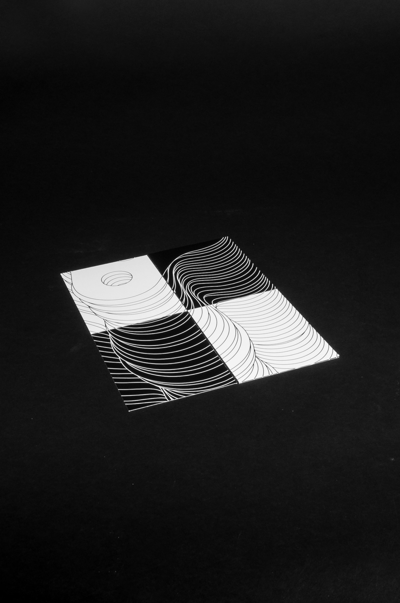
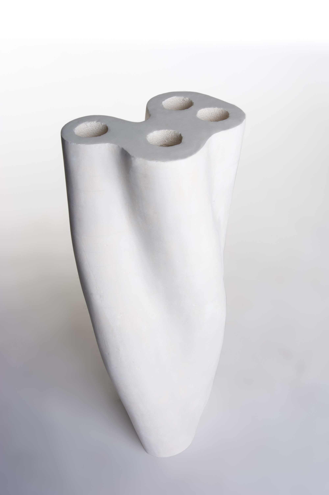
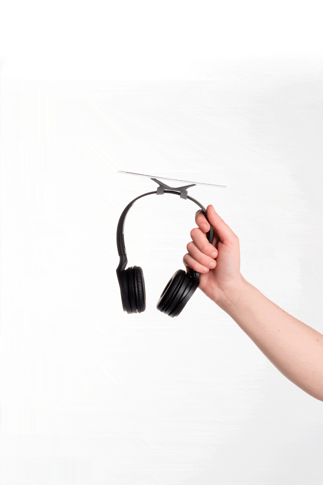

sòno
info

Sòno è una riflessione sullo spazio personale, limite fisico che definisce la nostra identità e le nostre relazioni. Deriva istintiva dell’evoluzione, che la società ha codificato sotto forma di convenzione, varia così frequentemente tra gli individui e i contesti da non poter essere percepito in maniera univoca.
Nell’esperienza quotidiana esso assume una duplice funzione: da una parte è un’aura protettiva che ci distanzia dagli altri, dall’altra è una bolla che ospita i nostri conoscenti e amici, avvicinandoli a noi via via che i rapporti si fanno più stretti. Questa sua doppia natura lo rende un’esperienza tanto individuale quanto sociale.
La percezione che abbiamo dello spazio personale è mitigata dall’abitudine con cui viene incorporato nella vita quotidiana: sensibili alla sua violazione, ne sperimentiamo spesso solo gli effetti negativi.
Sòno è un’area di sperimentazione.
Lo spazio personale di ognuno si traduce in un suono specifico, e le interazioni con gli altri, secondo le loro distanze, in combinazioni sonore sempre nuove: la particolarità di ogni spazio e i movimenti irripetibili degli utenti generano un’esperienza immersiva che dà all’individuo libertà espressiva e consapevolezza relazionale.
La posizione dei partecipanti viene tracciata grazie al riconoscimento di simboli codificati posti in cima alle cuffie, dispositivo di ascolto del singolo che lo isola dall’ambiente immergendolo nell’esperienza. L’evoluzione di sòno nel tempo è resa comunicabile ai partecipanti inattivi da una visualizzazione che traduce il movimento e le pulsazioni sonore in grafiche proiettate.
Nell’esperienza quotidiana esso assume una duplice funzione: da una parte è un’aura protettiva che ci distanzia dagli altri, dall’altra è una bolla che ospita i nostri conoscenti e amici, avvicinandoli a noi via via che i rapporti si fanno più stretti. Questa sua doppia natura lo rende un’esperienza tanto individuale quanto sociale.
La percezione che abbiamo dello spazio personale è mitigata dall’abitudine con cui viene incorporato nella vita quotidiana: sensibili alla sua violazione, ne sperimentiamo spesso solo gli effetti negativi.
Sòno è un’area di sperimentazione.
Lo spazio personale di ognuno si traduce in un suono specifico, e le interazioni con gli altri, secondo le loro distanze, in combinazioni sonore sempre nuove: la particolarità di ogni spazio e i movimenti irripetibili degli utenti generano un’esperienza immersiva che dà all’individuo libertà espressiva e consapevolezza relazionale.
La posizione dei partecipanti viene tracciata grazie al riconoscimento di simboli codificati posti in cima alle cuffie, dispositivo di ascolto del singolo che lo isola dall’ambiente immergendolo nell’esperienza. L’evoluzione di sòno nel tempo è resa comunicabile ai partecipanti inattivi da una visualizzazione che traduce il movimento e le pulsazioni sonore in grafiche proiettate.






